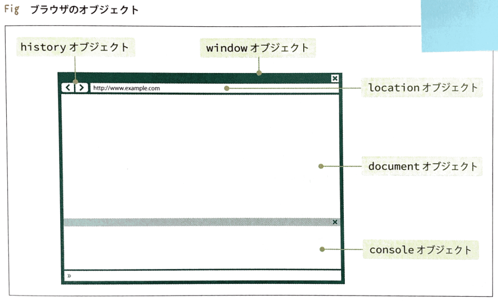

20191113
本「確かな力が身につくJavaScript「超」入門 」サンプルコードページ
# htmlにjs書くには<script>で囲む
<header>
<script>
console.log('コンソールに表示');
</script>
</header>
# htmlにjsファイルロード
<script src="../script.js"（=htmlファイルからのパス）></script>
# document オブジェクトはページ内のこと

# javascriptの文末のセミコロン(;)は省略可能だが挙動がおかしくなる場合があるので必ずつけること
# htmlのidタグがchoice の要素のコンテンツ変更
<script>
document.getElementById('choice').textContent = new Date();
</script>
# if文
<script>
if(window.confirm('ゲームスタート！準備はいい？')){
console.log('ゲームを開始します。');
} else {
console.log('ゲームを終了します。');
}
</script>
# parseInt()で文字列整数に変換
<script>
var number = Math.floor(Math.random() * 6);
var answer = parseInt(window.prompt('数当てゲーム。0〜5の数字を入力してね。')); // window.prompt():ダイヤルボックス表示
</script>
# for文
<script>
for(var i = 1; i <= 10; i++) {
console.log(i + '枚');
}
</script>
# function
<script>
var total = function(price) { // 関数名:total
var tax = 0.08;
return price + price * tax;
}
document.getElementById('output').textContent = 'コーヒーメーカーの値段は' + total(8000) + '円（税込）です。';
</script>
# 配列[]
<script>
var todo = ['デザインカンプ作成', 'データ整理', '勉強会申し込み', '牛乳買う'];
todo.push('歯医者に行く');
for (var i = 0; i < todo.length; i++) {
var li = document.createElement('li'); // liタグ（htmlのリストのタグ）生成
li.textContent = todo[i];
document.getElementById('list').appendChild(li); // 子要素追加
}
</script>
# オブジェクト（pythonの辞書みたいなの）
<script>
var jsbook = {title:'JavaScript入門', price:2500, stock:3}; // プロパティtitle, price, stock のオブジェクト
document.getElementById('title').textContent = jsbook.title;
document.getElementById('price').textContent = jsbook.price + '円';
document.getElementById('stock').textContent = jsbook.stock;
</script>
# 要素にイベント設定
<script>
document.getElementById('form').onsubmit = function() { // submit時の動作
var search = document.getElementById('form').word.value;
document.getElementById('output').textContent = '『' + search + '』の検索中...';
return false; // ページ再読み込み避ける（htmlの基本動作キャンセル）
};
</script>
<div class="main-wrapper">
<section>
<form action="#" id="form"> <!-- 画面遷移なしの場合は送信先のurlであるactionは"#" -->
<input type="text" name="word">
<input type="submit" value="検索"> <!-- formタグは送信ボタンクリックされると指定ページに入力内容送信 -->
</form>
<p id="output"></p>
</section>
</div>
# 変数0埋め
<script>
var addZero = function(num, digit) {
var numString = String(num);
while(numString.length < digit) {
numString = '0' + numString;
}
return numString;
}
for(var i = 0; i < songs.length; i++) {
var paragraph = document.createElement('p');
paragraph.textContent = addZero(i + 1, 2) + '. ' + songs[i];
document.getElementById('list').appendChild(paragraph);
}
</script>
# URL書き換え(location.href)
<script>
location.href = document.getElementById('form').select.value;
</script>
# html要素取得（document.querySelector）
<script>
var opt = document.querySelector('option[value="index.html"]'); // htmlの<option>タグの、value属性が"index.html"にマッチ
</script>
# Cookie（ブラウザに保存されるサーバ間のやり取りデータ）
<script>
Cookies.set('answered', 'yes', {expires: 7}); // Cookieに変数set 変数, 値, 有効期限（ここでは7日）
document.getElementById('remove').onclick = function() {
Cookies.remove('answered'); // Cookie削除
};
</script>
# thisはイベントが発生した要素。function内でのみ使える
<script>
var thumbs = document.querySelectorAll('.thumb'); // htmlタグで"thumb"にマッチする要素すべて取得
for(var i = 0; i < thumbs.length; i++) {
thumbs[i].onclick = function() {
document.getElementById('bigimg').src = this.dataset.image; // 画像変えるときは<img>タグのsrc属性変更する。ここのthisはonclickのこと
};
}
</script>
# jQuery: jsの補助ツール（ネットからソースロードするためjQueryはネット接続できないと使えない。バージョンによって機能が微妙に違うので注意）
<script src="http://code.jquery.com/jquery-1.11.3.min.js"></script>
<script>
// 開閉するナビゲーションメニュー
// jQueryは$()で要素アクセス。jsとdocument.querySelectorAll() 同じ機能だが型がjQueryオブジェクト型
$(document).ready(function(){ // $(document).ready(function(){})はhtmlがロードされたらfunction実行する
$('.submenu h3').on('click', function(){ // jQueryは$().on()でイベント設定。<h3>にクリックイベント設定している
$(this).next().toggleClass('hidden'); // $(this)でthisをjQueryオブジェクトに変換して、.next()でイベントが発生した次の要素取得して、 toggleClass():取得した要素に()内のパラメータで指定されているクラス名がついていなければ追加、なければ削除を実行
});
});
</script>
<script src="http://code.jquery.com/jquery-1.11.3.min.js"></script>
<script>
// アニメーション機能でボックスを開く・たたむ
$(document).ready(function(){
$('#box_btn').on('click', function(){
$('#box').slideToggle(); // $().slideToggle(スピード)：要素のボックスを開く/閉じる
});
});
</script>
# Ajax:非同期でページ切り替えずにサーバとデータ送受信するjsの機能

# Ajaxでファイルの読み込み
<script src="http://code.jquery.com/jquery-1.11.3.min.js"></script>
<script>
$(document).ready(function(){
$.ajax({url: 'data.json', dataType: 'json'}) // urlはダウンロードしたいデータのurl。dataTypeはダウンロードするデータの種類
// データダウンロードできたときの処理
.done(function(data){ // サーバから渡されたデータをパラメータdataに代入
$(data).each(function(){ // eachメソッドで配列の各項目にfunction実行
if(this.crowded === 'yes') {
var idName = '#' + this.id;
$(idName).find('.check').addClass('crowded'); // $().find()で子要素の内'.check'にマッチする要素すべて取得
}
});
})
// データダウンロードできなかったときの処理
.fail(function(){ // データダウンロードできなかったときの処理
window.alert('読み込みエラー');
});
// クリックされたら空き席状況を表示
$('.check').on('click', function(){
if($(this).hasClass('crowded')) {
$(this).text('残席わずか').addClass('red');
} else {
$(this).text('お席あります').addClass('green');
}
});
});
</script>
# jsでローディング画像表示例
# jQueryでローディング画像表示例
CSS
# CSS(Cascading Style Sheets（カスケーディング・スタイル・シート）):
webサイトにデザインを施すための言語。HTMLとセットで扱われ、HTMLで記述した文章構造を装飾し見栄えを良くする役割を担う。
CSSは、「セレクタ」「プロパティ」「値」の3つで構成されます。
それぞれを記述することで「どの要素（セレクタ）の、何を（プロパティ）、どのように（値）する」という命令文が成立します。

上記例の場合、「pタグの中（＝セレクタ）の文字色（＝プロパティ）を#F80206（＝値）にする」
# (CSS)セレクタ:
CSSによるデザイン指定をどのHTML要素に適用させるかを指定するのに用いられるもの。
# 属性:
HTMLタグの設定。例えばリンクを定義する<a>タグには、リンク先を指定するhref属性を付加。

# #id（ID名の指定）
「#（シャープ）ID名」と記述することで、指定のIDに装飾が適用されます。
#box {
display: none;
margin: 0 auto 0 auto;
max-width: 960px;
}
# .class（クラス名の指定）
「.（ドット）クラス名」と記述することで、指定のクラスに装飾が適用されます。
.header-contents {
position: relative;
}